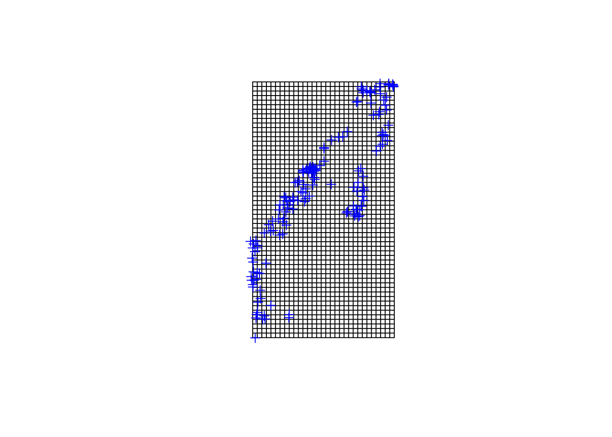

Lab 6: Connectivity, Interpolation
This lab covers connectivity analysis with the grainscape R package. I have also included some extra OPTIONAL exercises at the end of the lab on interpolation with the gstat R package.
For the connectivity analysis, you need to hand in a PDF produced from R Markdown (or if you have trouble knitting, you can copy and paste into a Word doc and save as PDF), including output plots, any statistics, code, and text for answers to the questions.
Connectivity with grainscape R package
Landscape connectivity reflects how well patches on a landscape are connected. Applications in conservation biology include corridor analysis and resilience of networks of reserves. Landscape connectivity can tell us how difficult or easy it is to travel between patches across a landscape, depending on the organism or phenomena of interest. For a great example of some applications of Corridors for Conservation and examples of Corridor projects and landscape-scale experiments, check out: https://conservationcorridor.org/, which is co-led by Nick Haddad, Professor at Michigan State University and Director, Kellogg Biological Station Long-Term Ecological Research (LTER).
Lake Tekapo and surrounding landscape, New Zealand. Phoebe L. Zarnetske 2010.
Connectivity analysis takes into account barriers to dispersal and movement for a given organism or phenomena of interest. These include natural barriers (e.g., terrestrial vs. aquatic systems, mountain ranges, certain land cover types) and manmade (e.g., dams, roads, developed land, conversion to agriculture).
To learn about how to quantify connectivity across a landscape, you will work through the grainscape vignette. Here is the RMarkdown version of the grainscape Connectivity Vignette
Work through the grainscape vignette at least through Modeling with Grainscape - you can continue on if you’d like (it is a long vignette). Read the first few pages of Landscape networks with 1D and 2D nodes to be able to answer one of the questions below. Turn in your work on the vignette to show how far you completed, plus the questions below. Even if you do not finish the entire vignette, answer all of the following questions:
grainscape: QUESTION 1
Answer the following questions in a few sentences each: What is a minimum planar graph? What is a Voronoi tessellation? What is a 2D node and how does it compare with a 1D node?
grainscape: QUESTION 2
How do the analyses presented in this vignette relate to analyses you would perform with patch metrics from the landscapemetrics R package or Fragstats (see Lab 3 Question 1 for links to definitions on patch metrics)? How are they similar and how are they different?
grainscape: QUESTION 3
For a given species or phenomena moving across a landscape, how would you use ecological theory, and knowledge of the species natural history or phenomena, to assign resistance values and create a minimum planar graph? Use an example to explain your answer.
grainscape: QUESTION 4
How does spatial scale of land cover or elevation data affect the interpretation of connectivity?
OPTIONAL EXERCISES: Interpolation with gstat R package
If you would like more practice fitting variograms and applying a variogram fit to interpolate between points in a different R package to create a smooth surface, complete the gstat vignette. After completing the vignette with the meuse data, complete the vignette again to construct variograms and interpolate using a dataset of your choice with a continuous variable that is associated with geographic coordinates. If you don’t have a dataset of your own, you could use the Bryce Canyon species and site data from Lab 4 or the WEF data from Lab 5. For any dataset you choose, select just 1 response variable of interest (e.g., as is done with “zinc” with the meuse data).
Extra Resource: You may also find this exercise helpful in explaining some additional aspects of interpolation: https://rspatial.org/raster/analysis/4-interpolation.html. It uses the gstat package as well, but with precipitation data in California from the rspatial R package.
When working through the gstat vignette with the data you chose:
Fit 2 types of variograms. The example with the meuse data fits a Spherical and an Exponential model. See
?fit.variogramand?vgmfor options.Use 2 grid resolutions to evaluate the influence of resolution on the interpolation. see below for the
cellsize()option.Consider the questions at the end of this section below.
Below is some example code for starting to use bryceveg and brycesite with gstat. You could modify it for your own data or use it to start the gstat vignette with bryceveg and brycesite.
Start working in R:
##### STARTING UP R
# Clear all existing data (or don't and just make sure you start with a newly opened RStudio session; see why this may not be so great for reproducibility: https://rstats.wtf/save-source.html#rm-list-ls)
rm(list=ls())
# Close graphics devices
graphics.off()
# Set the paths for your work
output_path<-("output")
# if this folder doesn't exist, create it
if(!dir.exists(output_path)){
dir.create(output_path)
}
# Create the folders (directories) "data" and "lab6" - If they exist already, this command won't over-write them.
data_path<-(file.path("data","lab6"))
if(!dir.exists(data_path)){
dir.create(data_path,recursive = TRUE)
}If you previously saved your workspace and want to load it here, do so this way:
load(file.path(output_path,"lab6.RData"))
NOTES on R packages used in this lab:
- With R Markdown, it is helpful to install packages locally before knitting (copy this into your R console before you knit).
for (package in c("gstat","sp","labdsv")) {if (!require(package, character.only=T, quietly=T)) {
install.packages(package)
library(package, character.only=T)
}
}
Load the packages:
library(gstat)
library(sp)
library(labdsv)Example code for starting with the bryceveg and brycesite data. Merge it into one dataframe, containing only points with valid coordinates.
data(bryceveg)
data(brycesite)
veg<-bryceveg
site<-brycesite
# Calculate species richness by plot
spc.rich <- apply(veg,1,sum)
spc.rich <- spc.rich[-109]
rich<-data.frame(spc.rich)
east <- na.omit(site$east)
north <- na.omit(site$north)
rich <- cbind(Row.Names = rownames(rich), rich)
site <- cbind(Row.Names = rownames(site), site)
row.names(rich)<-NULL
row.names(site)<-NULL
# Merge these data together by the Row.Names
rs<-merge(rich,site,by=c("Row.Names"))
# Make points a matrix for coordinates by referencing the 8th column "east" and the 11th column "north".
names(rs)
rsp <- as.matrix(rs[c(8,11)])
# Make spatial points dataframe and a grid to interpolate over. This code makes the cellsize (resolution) 100 x 100; change to different cell values (e.g., 30,30 or 200, 200) to see how this changes the grid resolution.
rs1<-SpatialPointsDataFrame(rsp,rs)
rs_grid = spsample(rs1, type = "regular", cellsize = c(500,500))
gridded(rs_grid) = TRUE
# Assign coordinates to the data
coordinates(rs)<- ~east+north
# Visualize the grid cell size relative to the point locations. Adjust the cell size if needed - you may want to make the grid cell size finer (e.g., cellsize=c(50,50)) to capture the heterogeneity better.
plot(geometry(rs_grid))
plot(rs, add=TRUE, col="blue")
The code above leaves off at the gstat vignette 3 Spatial data frames. Complete the gstat vignette with the data you chose to use. Consider the questions below.
gstat: QUESTION 1
How does the choice of the variogram models you chose (e.g., “Exp”, “Sph”, “Gau”, “Mat”), affect the interpolation outcome? Make 2 interpolation plots, one from each model and explain why they differ. If they are similar, why are they are similar?
gstat: QUESTION 2
How does grid resolution alter your interpolation? Compare 2 or more grid sizes by adjusting the cellsize() option. What resolution is most appropriate, given your data?
gstat: QUESTION 3
What could be causing the interpolated pattern in the variable that you are observing? What are some potential explanatory variables that influence the interpolated response variable? Are there some prior studies that provide evidence of some explanatory variables?

This work is licensed under a Licensed under CC-BY 4.0 2020 by Phoebe Zarnetske.